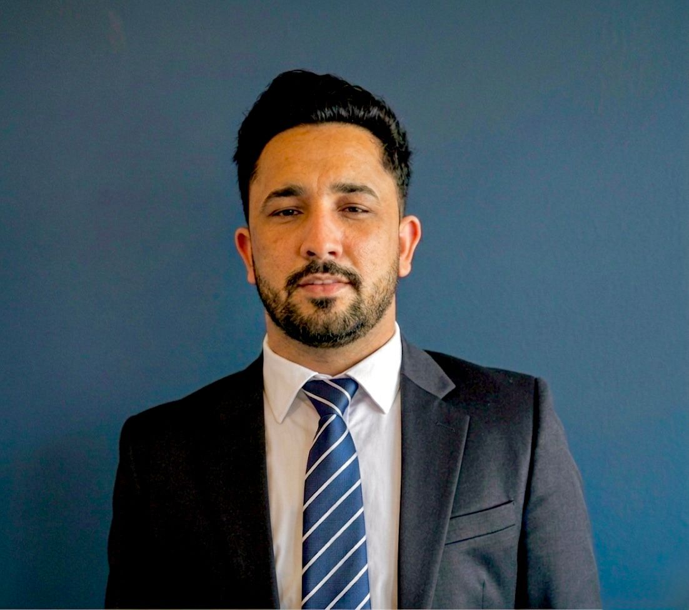

Marie Skłodowska-Curie (MSCA) Doctoral Fellow · DC1, FOCAL DN
Dept. of Information and Communications Engineering · Aalto University, Finland
I am a doctoral researcher at Aalto University, working as DC1 within the FOCAL Marie Skłodowska-Curie Doctoral Network under the supervision of Dr. Alexis Dowhuszko. My research focuses on 6G Non-Terrestrial Networks (NTNs), spanning AI-based resource allocation, network slicing, load balancing via free-space optical inter-satellite links, and interference analysis in multi-layer optical LEO constellations.
Previously, I was a Graduate Research Assistant at the Multimedia Communication and Systems Lab (MCSL), University of Ulsan, South Korea, where I developed metaheuristic optimization frameworks for wireless-powered IoT networks, IRS-assisted systems, and physical layer security.
Research Interests
News
Publications
Journal Articles
IEEE Open Journal of the Communications Society, vol. 7, pp. 3439–3450, 2026
Enhancing Physical Layer Security in WPCNs With IRS and Controlled Jamming for 6G IoT Applications
IEEE Access, vol. 13, pp. 4670–4682, 2025
Quantum PSO-Based Optimization of Secured IRS-Assisted Wireless-Powered IoT Networks
Applied Sciences (MDPI), vol. 14, no. 24, p. 11677, 2024
IEEE Access, vol. 12, pp. 65241–65253, 2024
An Efficient and Improved Model for Power Theft Detection in Pakistan
Bulletin of Electrical Engineering and Informatics, vol. 10, no. 4, pp. 1828–1837, 2021
Conference Papers
Load Balancing in Non-Terrestrial Networks Using Free Space Optical Inter-satellite Links
IEEE International Conference on Communications (ICC), Glasgow, Scotland, 2026
Integrated Sensing and Communication (ISAC) in Secured Wireless Powered IoT Networks
Symposium of the Korean Institute of Communications and Information Sciences (KICS), Jeju, Korea, 2024
Enhancing Sum Throughput in Wireless Powered IoT Networks Using TDMA-Based Resource Allocation
26th International Conference on Mechatronics Technology (ICMT), Busan, South Korea, pp. 1–5, 2023
Preprints
Authorea Preprints / TechRxiv, 2026
Thesis
Optimization of Resources Allocation and Security in Wireless Powered IoT Networks
University of Ulsan, Ulsan, South Korea, 2025
Education
Aalto University · Espoo, Finland
D.Sc. (Tech.) in Electrical Engineering — Doctoral Candidate
MSCA DC1, FOCAL Doctoral Network. Supervisor: Dr. Alexis Dowhuszko.
Focus: AI-based resource allocation and network slicing in multi-layer optical NTNs.
University of Ulsan · Ulsan, South Korea
M.Sc. in Electrical Engineering
BK21+ Scholarship. Research on wireless-powered IoT, IRS-assisted systems, NOMA/TDMA, and metaheuristic optimization (PSO, GA).
University of Science & Technology Bannu · Bannu, Pakistan
B.E. in Electrical Engineering (Telecommunication)
Final-year project: intelligent IoT-based power theft detection system.
Experience
Aalto University · Dept. of Information and Communications Engineering
MSCA Doctoral Fellow (DC1), FOCAL Doctoral Network
Research on NTN load balancing via FSO inter-satellite links, network slicing, and interference analysis in narrow-beam LEO satellite constellations.
Multimedia Communication and Systems Lab (MCSL), University of Ulsan
Graduate Research Assistant
BioSafe Diagnostics
Sales & Service Engineer
Technical service and preventive maintenance for medical diagnostic equipment; managed sales operations and performed field modifications.
Pakistan Telecom Ltd. · PTV · TESCO
Trainee Engineer (Rotations)
Hands-on rotations in optical fiber & digital switching (PTCL), video distribution systems (PTV), and electrical protection testing (TESCO).
Training & Mobility
2nd FOCAL Training School & Midterm Check Meeting
TNO, Delft & Airbus, Leiden · The Netherlands
Presented my doctoral research as DC1 at the network mid-term review. Technical sessions covered optical pointing, acquisition & tracking, coherent long-range optical communication, spatial-mode-multiplexed FSO, QKD space links, and AI/ML for satellite communication networks, with hands-on visits to the optical-communications labs at TNO and Airbus.
1st FOCAL Training School
Fraunhofer HHI · Berlin, Germany
Three-day MSCA training school on free-space optical (FSO) communication, satellite-based quantum key distribution (QKD), satellite constellation design, and NTN standardization in 3GPP, including visits to HHI's QKD and optical-communications laboratories.
Awards & Honors
Marie Skłodowska-Curie Fellowship (MSCA-DN) — European Commission, 2025
Competitive EU doctoral fellowship for early-stage researchers, awarded for excellence in research and training. Part of the FOCAL Doctoral Network on future open communication architectures for 6G.
BK21+ (Brain Korea 21+) Scholarship — National Research Foundation of Korea, 2022–2025
Prestigious government-funded fellowship supporting outstanding graduate students in Korean universities, awarded for M.Sc. research at the University of Ulsan.
HEC Indigenous Scholarship (Balochistan & FATA) — Higher Education Commission of Pakistan, 2016–2020
Merit-based undergraduate scholarship awarded under the HEC project "Provision of Higher Education Opportunities for Students of Balochistan & FATA," a flagship national programme supporting talented students from underprivileged regions throughout the B.E. (Telecommunication) degree.
Contact
I am always happy to discuss research collaborations, questions about 6G NTN or wireless communications, or potential opportunities. Feel free to reach out by email.